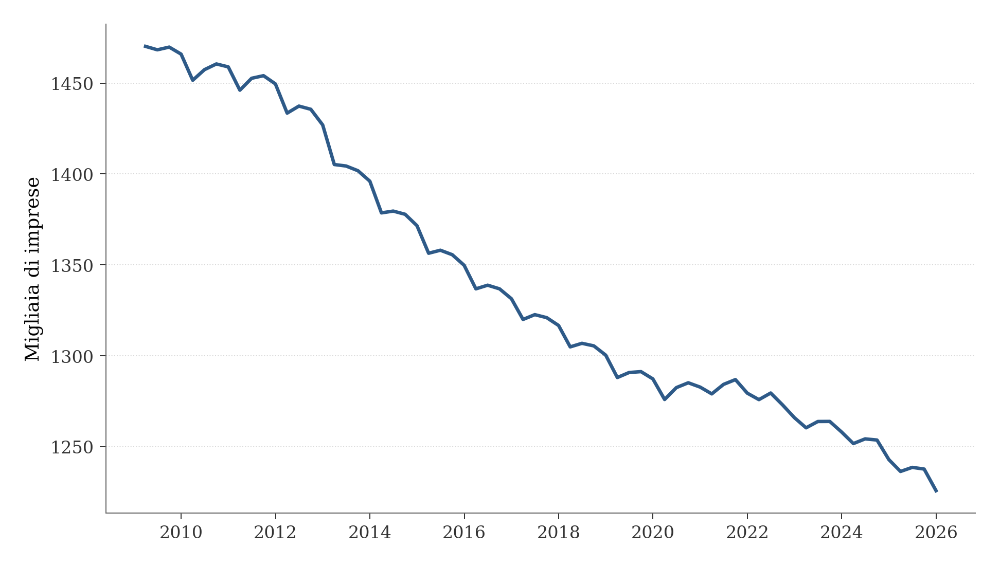
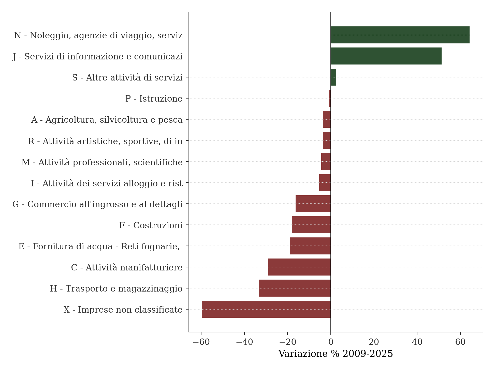
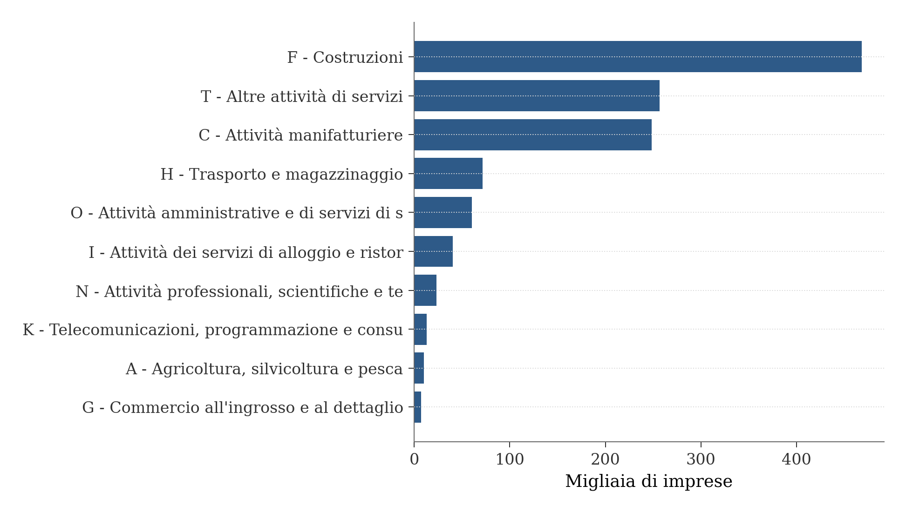
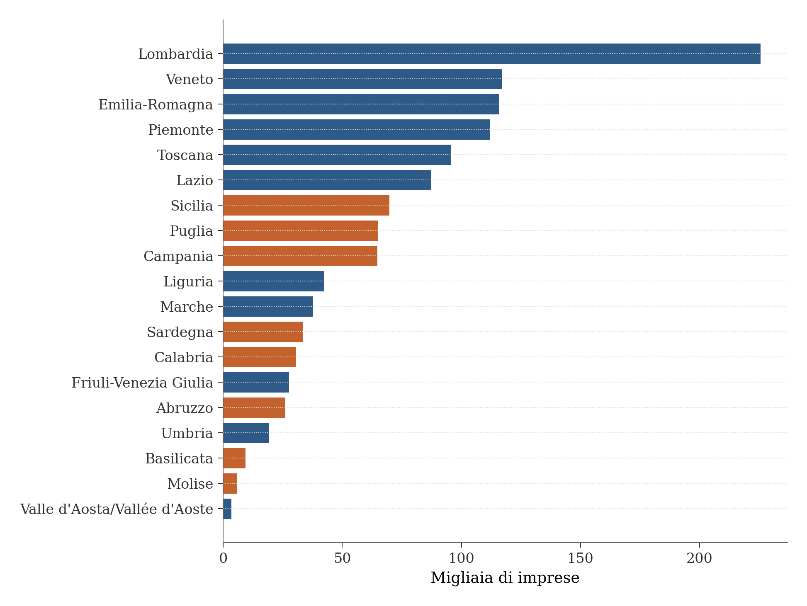
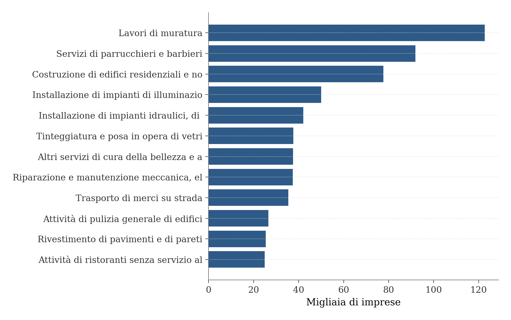
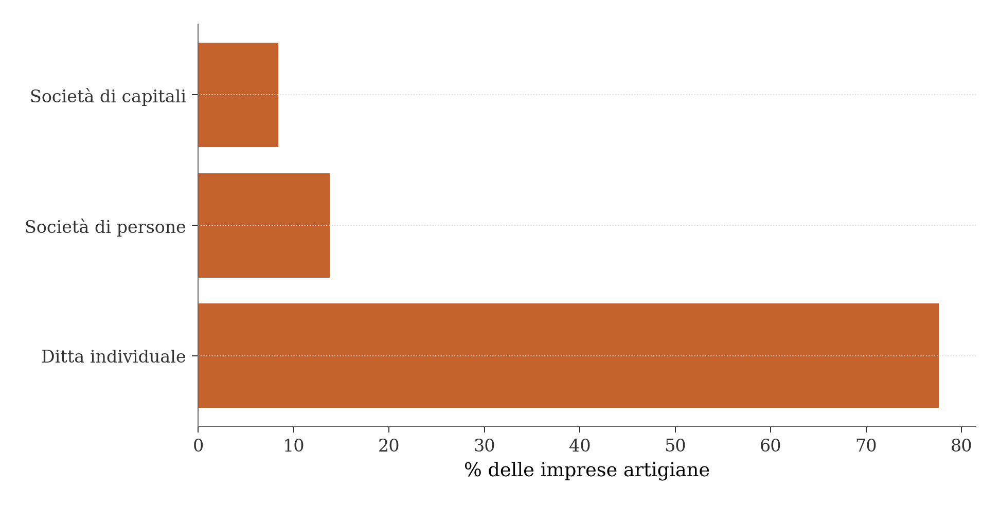
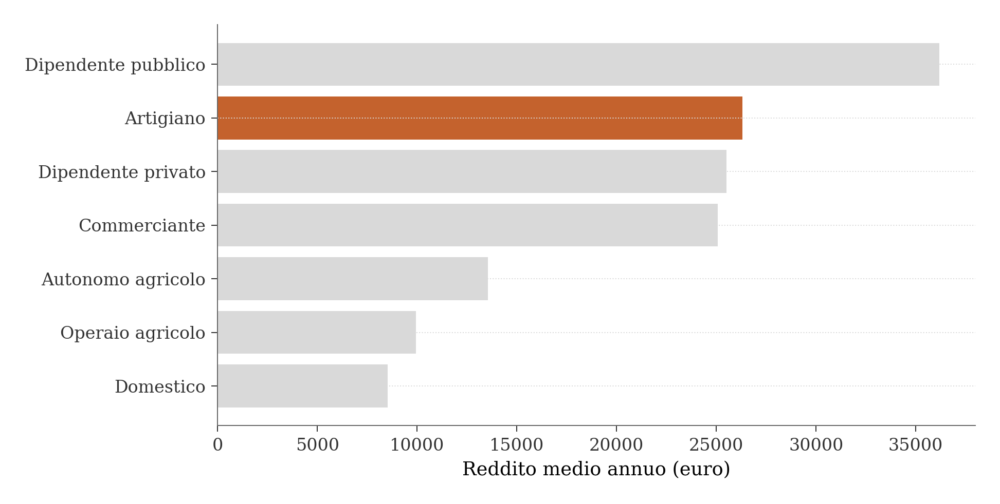
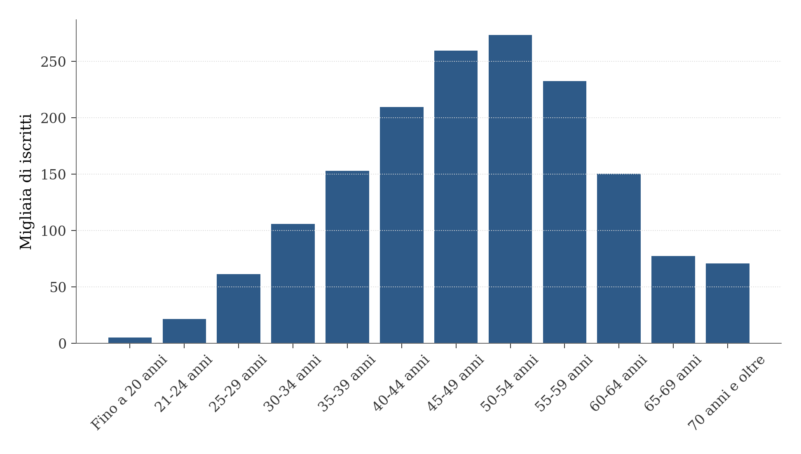
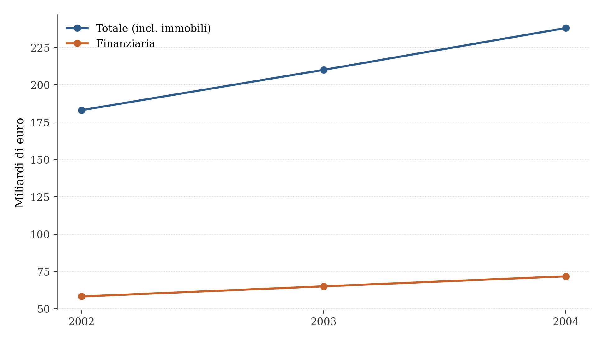
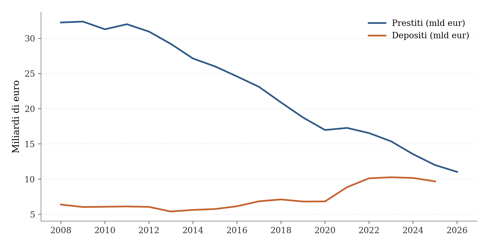

Mappa dell’artigianato italiano
Struttura, localizzazione e quadro normativo
Paolo Volterra ![]()
Quadro strutturale delle imprese artigiane italiane, con perimetro nazionale e fonti amministrative 2007-2026: stock di imprese e mestieri ATECO da InfoCamere/Camere di commercio, redditi e demografia da INPS, credito e depositi da Banca d’Italia, fonti di contesto da CNA e rapporti storici Artigiancassa. Il report misura quante sono le imprese artigiane, quali attività svolgono, dove si concentrano, come cambia la loro struttura finanziaria e cosa implica la Legge 34/2026 per il perimetro giuridico della qualifica.
artigianato, PMI, InfoCamere, Camcom, credito, legge 34/2026
Versione citabile su Zenodo, con il PDF: doi.org/10.5281/zenodo.21300284.
1 Obiettivo
Mappare come sono fatte, dove stanno e quanto sono grandi le imprese artigiane italiane: struttura settoriale, distribuzione geografica, dimensione tipica d’impresa, reddito e situazione creditizia, alla luce del nuovo quadro normativo introdotto dalla Legge 34/2026.
2 Nota sulla release
Questo documento è un’analisi basata su fonti amministrative pubbliche e su elaborazioni di database istituzionali, in parte non redistribuibili integralmente insieme al deposito per ragioni di licenza. Le pubblicazioni di terzi citate in bibliografia restano di proprietà dei rispettivi editori; le tabelle e le figure presentate in questo lavoro sono elaborazioni originali dell’autore, con periodo, geografia e universo di riferimento indicati nel testo o nelle didascalie.
Per citare questo lavoro si raccomanda l’uso del DOI Zenodo associato al deposito. In assenza di DOI, si può citare autore, titolo, versione e data di aggiornamento indicati in testa al documento.
3 Sintesi: cosa resta fermo
- L’artigianato italiano conta circa 1,2 milioni di imprese attive ed è in calo strutturale dal 2009.
- Non è soprattutto “mestiere d’arte”: il nucleo numerico è edilizia, servizi alla persona/auto e manifattura leggera.
- Il calo aggregato nasconde una ricomposizione settoriale: trasporto e manifattura scendono molto più delle costruzioni, mentre alcuni servizi crescono da basi piccole.
- La geografia è concentrata: Nord e grandi province urbane pesano molto più dell’idea diffusa di micro-attività disperse.
- La dimensione tipica è minima: la maggioranza non ha dipendenti, e il reddito personale medio è intorno ai 25-26 mila euro annui.
- Per il fatturato vanno distinti valore aggiunto, reddito personale, credito e ricchezza patrimoniale.
4 Quanto: una popolazione in calo strutturale

Figura 1: Imprese artigiane attive in Italia, 2009-2025 (fonte: InfoCamere)
Nel 2009 le imprese artigiane attive in Italia erano 1.470.209. Nell’ultimo periodo disponibile della serie InfoCamere sono 1.225.817, una variazione del -16,6%. Il dato più recente, riferito a Camcom Marche per il primo trimestre 2026 [1], conta 1.216.101 imprese artigiane attive: il calo è quindi continuo dal 2009 [2], non un effetto congiunturale recente.
5 Il calo non è uniforme: si ricompone verso i servizi

Figura 2: Variazione % imprese artigiane per settore, 2009-2025 (Italia)
Il calo aggregato nasconde una ricomposizione settoriale. Il settore del trasporto e del magazzinaggio perde il 33,2% delle sue imprese artigiane tra il 2009 e il 2025, il manifatturiero il 28,9%: circa il doppio della flessione registrata dalle costruzioni, che si fermano al -17,9%. Alcuni settori più piccoli crescono nello stesso periodo, in particolare l’ICT e la comunicazione (+51,3%) e il noleggio e i servizi alle imprese (+64,3%) [3]. Il report CNA conferma la stessa gerarchia nel periodo 2008-2023, con il manifatturiero a -24,8%, le costruzioni a -16,8% e i trasporti a -30,0% [4].
6 Quali attività: prevalenza di costruzioni e servizi

Figura 3: Imprese artigiane attive per sezione ATECO, Italia, Q1 2026
Tre sezioni da sole coprono l’80% del totale delle imprese artigiane: costruzioni, altri servizi e manifatturiero. L’artigianato italiano non è quindi prevalentemente composto da botteghe d’arte e tradizione, ma da edilizia e da subfornitura di servizi e manifattura su piccola scala [1]. La legge-quadro 443/1985 [5], del resto, non elenca mestieri: definisce l’impresa artigiana per criteri, in particolare la prevalenza del lavoro personale sul capitale, applicabili trasversalmente a 23 delle 24 sezioni ATECO.
7 Dove: concentrazione al Nord e nelle grandi città

Figura 4: Imprese artigiane attive per regione, Q1 2026
Le prime quattro regioni, Lombardia, Veneto, Emilia-Romagna e Piemonte, fanno insieme il 48,0% del totale nazionale. A livello provinciale, su 105 unità NUTS3 effettive, le prime tre province, Milano, Roma e Torino, pesano da sole il 15,2% del totale nazionale: più della somma delle ultime trenta province messe insieme.
8 Quali mestieri: muratori e parrucchieri sono i più diffusi
La legge non elenca mestieri, ma il dato esiste: Camcom Marche pubblica un dataset ATECO a 6 cifre (sottocategoria) [6], che scende al livello di mestiere specifico. Il quadro reale, Italia Q1 2026:

Figura 5: Top 12 mestieri per numero di imprese artigiane, Italia Q1 2026
Il mestiere artigiano più diffuso in Italia è quello del muratore, con 122.685 imprese, pari al 10,1% del totale, seguito da parrucchieri e barbieri (91.891 imprese, 7,6%) e dalla costruzione di edifici (77.665 imprese, 6,4%). Questi tre soli codici valgono il 24% di tutto l’artigianato nazionale. La falegnameria, spesso presa come icona dell’artigianato, vale invece appena lo 0,63% del totale. Nei numeri, quindi, l’immagine dell’artigianato come mestiere d’arte è minoritaria: prevalgono l’edilizia e i servizi alla persona e all’auto.
9 Dimensione: imprese piccole, quasi tutte a conduzione individuale
InfoCamere e Camcom forniscono solo il conteggio delle sedi, non il numero di addetti né il fatturato. Due fonti complementari colmano parzialmente questa lacuna.
Il rapporto CNA L’artigianato in Italia (luglio 2024) [4] conta 2.640.513 occupati nelle imprese artigiane, pari al 14,5% degli occupati nel totale delle imprese attive; di questi, 1.309.476 sono dipendenti (50,3%), mentre il resto è composto da titolari e collaboratori familiari. Il dato di 1.265.980 imprese artigiane censite a metà 2024 è coerente, per ordine di grandezza, con la serie InfoCamere, che a fine 2024 registra 1.225.817 imprese [2].
Sei imprese artigiane su dieci, in sintesi, non hanno un solo dipendente: la conduzione individuale è la norma, non l’eccezione.
9.1 Forma giuridica: la legge-quadro blocca la crescita societaria

Figura 6: Imprese artigiane per forma giuridica, fine 2022 (fonte: CNA su dati InfoCamere-Movimprese)
La quasi totalità delle imprese artigiane, il 91,4%, è costituita in forma di ditta individuale o di società di persone; solo l’8,4% è società di capitali [4]. Il confronto con il resto dell’economia richiede due riferimenti distinti, che non vanno sovrapposti. Rispetto all’intero sistema produttivo nazionale, che include anche le imprese artigiane, la ditta individuale pesa molto meno (50,6% contro 77,6%) e la società di capitali molto di più (31,5%). Isolando invece le sole imprese non artigiane, la quota di società di capitali sale ulteriormente al 37,8%. In entrambi i confronti il divario ha la stessa origine normativa: la Legge 443/1985 ammette per le imprese artigiane solo la forma di società a responsabilità limitata, mai la società per azioni, e impone che il socio unico di una Srl artigiana non ricopra cariche in altre società. Si tratta di una scelta legislativa che limita strutturalmente la patrimonializzazione e concentra il rischio d’impresa sull’imprenditore.
Nonostante questo vincolo, dentro il perimetro artigiano la forma societaria si sta ricomponendo. Tra il 2008 e il 2021 le Srl artigiane sono più che raddoppiate, passando da un incremento di 60.198 unità pari al 131,2%, mentre nello stesso periodo le ditte individuali sono calate di 191.267 unità (-18,1%) e le società di persone di 98.805 (-36,2%). Chi resta artigiano tende quindi a incorporarsi, anche se la Srl resta una forma minoritaria, l’8,4% a fine 2022: un segnale di selezione strutturale interna al perimetro artigiano, distinto dal calo aggregato del numero di imprese trattato in precedenza.
10 Quanto guadagna un artigiano
La misura disponibile a questo livello non è il fatturato d’impresa ma il reddito personale. L’Osservatorio sui lavoratori dipendenti e indipendenti dell’INPS (dicembre 2025 [7]) misura il reddito da lavoro di chi è iscritto come artigiano ai fini previdenziali, e nel 2024 lo colloca in media a 26.300 euro l’anno. Questo valore include però anche chi nel corso dell’anno ha avuto altre posizioni lavorative oltre a quella artigiana. Per il 90,6% degli artigiani, che ha avuto solo questa posizione nell’anno, il caso tipico della ditta individuale mono-attività, il reddito medio scende a 24.852 euro.

Figura 7: Reddito medio annuo da lavoro per categoria, Italia 2024 (fonte: INPS)
Gli artigiani, evidenziati nel grafico, occupano la seconda posizione per reddito medio, dopo i dipendenti pubblici e sopra i dipendenti privati e i commercianti. Sono però l’unica grande categoria con reddito medio in calo in termini nominali tra il 2023 e il 2024: una flessione del 2,5%, da 26.977 a 26.300 euro, mentre nello stesso periodo i dipendenti privati crescono del 3,6% e i dipendenti pubblici dello 0,8%. Il numero di lavoratori artigiani, inteso come posizione INPS e non come conteggio di imprese, è sceso da 1,507 milioni nel 2019 a 1,284 milioni nel 2024, una riduzione del 14,8%. Il 12% degli artigiani attivi nel 2024 risulta già titolare di pensione, una delle quote più alte tra tutte le categorie di lavoro osservate.
Sulla cittadinanza, lo stesso Osservatorio INPS [7] riporta che il 12,0% degli artigiani, 154.631 persone su un totale di 1.283.682 nel 2024, ha cittadinanza extra-UE: una quota in linea con quella dei commercianti (11,3%) e nettamente inferiore a quella degli autonomi agricoli (25,6%). I lavoratori extracomunitari, in tutte le categorie osservate, hanno un reddito medio più basso rispetto ai lavoratori comunitari (16.519 euro contro 27.375 euro) e lavorano un numero di settimane inferiore in media (39 contro 43,8).
11 Demografia: un settore che invecchia
I dati disaggregati dell’INPS relativi al 2019, incrociati per provincia, qualifica, anzianità di iscrizione, classe di età e sesso [8], restituiscono un quadro più netto del semplice calo numerico: gli artigiani italiani sono una popolazione anziana, con un ricambio generazionale debole.

Figura 8: Distribuzione per classe di età degli iscritti artigiani, Italia 2019 (fonte: INPS)
Il 56,5% degli iscritti ha tra 45 e 64 anni, mentre solo il 5,4% ha meno di 30 anni. Il 45,5% risulta iscritto alla gestione artigiani da 20 anni o più: quasi la metà della base artigiana italiana è quindi composta da persone iscritte da due decenni, non da nuovi ingressi. La variazione regionale segue il pattern già visto nella distribuzione geografica delle imprese: Veneto, Marche e Umbria hanno le quote più alte di iscritti di lungo corso, tra il 48% e il 51% con almeno vent’anni di anzianità, mentre Campania, Lazio e Calabria hanno le quote più basse, tra il 38% e il 41%. Il Centro-Nord, dove prevale l’edilizia, ha quindi anche la base occupazionale più stabile e più anziana.
Sul piano del genere, le donne hanno una probabilità quasi tripla, rispetto agli uomini, di essere registrate come collaboratrici familiari anziché come titolari: 15,3% contro 5,3%. Il dato è confermato sia nel 2015 sia nel 2019, ed è quindi stabile nel tempo.
11.1 Ricambio generazionale: la fuga verso il lavoro dipendente
L’Ufficio Studi CGIA di Mestre, elaborando le stesse serie INPS, individua un meccanismo esplicito dietro il calo numerico. Non si tratta solo della mancanza di nuovi ingressi giovani: una parte di chi è già artigiano da anni sceglie di chiudere la partita IVA e tornare al lavoro dipendente, ritenuto meno gravoso in termini di rischio e di adempimenti amministrativi [9]. Il conteggio INPS delle persone iscritte alla gestione artigiani, titolari, soci e collaboratori familiari, passa da 1.866.904 unità nel 2012 a 1.457.000 nel 2023: una riduzione di 410 mila unità, pari al 22%, in undici anni, con un’unica interruzione nel 2021 dopo la pandemia [10]. Il calo delle imprese attive, misurato da Movimprese e InfoCamere su un denominatore diverso, il numero di sedi d’impresa e non di persone, segue lo stesso ordine di grandezza: dal picco di 1.486.559 unità nel 2008 a 1.258.079 nel 2023.
La CGIA segnala anche una ricomposizione interna della base artigiana: la quota di collaboratori familiari scende dall’8,4% del 2014 al 7,2% del 2023 sul totale degli iscritti, un’ulteriore erosione del modello a conduzione familiare, coerente con l’invecchiamento e con la bassa quota di under-30 già osservata. A livello territoriale, il calo tra il 2012 e il 2023 è più forte nel Nord-Ovest industriale e nelle Marche, con Vercelli a -32,7%, Rovigo a -31,0%, Lucca a -30,8% e Teramo a -30,6%, rispetto alle grandi città del Centro-Sud, dove Roma perde l’8,3% nello stesso periodo e Napoli il 2,7%. Il pattern territoriale del calo relativo è quindi diverso da quello osservato sulla distribuzione assoluta delle imprese, dove il Nord resta comunque prevalente in termini numerici.
Il rischio segnalato dalla CGIA riguarda l’offerta di manodopera qualificata, non solo la sua quantità complessiva: se la tendenza non si inverte, mestieri manuali di manutenzione quotidiana come l’idraulico, il fabbro, l’elettricista e il serramentista rischiano una carenza strutturale entro un decennio, perché il ricambio generazionale, con solo il 5,4% di iscritti under 30, non compensa le uscite dal settore.
12 Ricchezza storica: patrimonio in crescita, quota assicurativa in aumento
Prima che la serie fosse interrotta nel 2012, Artigiancassa pubblicava un “Rapporto sul credito e sulla ricchezza finanziaria delle imprese artigiane”, con 14 edizioni tra il 1996 e il 2010 circa. Di queste, sono state recuperate tre edizioni consecutive, relative agli anni 2002-2004 [11], [12], [13].

Figura 9: Ricchezza delle imprese artigiane, 2002-2004 (fonte: Artigiancassa)
In tre anni la ricchezza finanziaria cresce del 23,2%, da 58,2 a 71,7 miliardi di euro, e quella totale del 30,1%, da 183 a 238 miliardi di euro, a fronte di un aumento del numero di imprese di solo il 2,4% nello stesso periodo: la crescita è quindi di tipo patrimoniale, non demografica. Un secondo pattern si conferma anno su anno: la quota di ricchezza finanziaria investita in prodotti assicurativi sale in modo continuo, dal 49,3% al 50,7% fino al 52,4%, a scapito di strumenti più attivi come azioni e fondi comuni.
13 Credito e depositi: dal debito all’autofinanziamento

Figura 10: Stock dei prestiti e dei depositi delle imprese artigiane in Italia (valori a fine anno, fonte: Banca d’Italia)
I dati di Banca d’Italia sui flussi finanziari [14] mostrano un cambiamento profondo nella struttura di finanziamento dell’artigianato italiano negli ultimi vent’anni. Lo stock di finanziamenti bancari concessi alle imprese artigiane scende dai 32,3 miliardi di euro del 2007 a 10,5 miliardi di euro nell’aprile 2026, una riduzione del 67,5%. Il processo di riduzione della leva finanziaria è stato continuo nel tempo e ha risentito solo marginalmente delle garanzie straordinarie introdotte durante la pandemia nel 2020. Nello stesso periodo i depositi bancari sono saliti da 6,4 a quasi 10 miliardi di euro, un aumento del 51,6%, attestandosi negli ultimi anni su un livello stabile tra 9,6 e 9,7 miliardi. Come conseguenza di questi due movimenti opposti, il rapporto tra depositi e prestiti è decuplicato, passando dal 19% del 2010 all’80,7% a fine 2024: le imprese artigiane fanno oggi un uso molto ridotto della leva finanziaria bancaria per operare, appoggiandosi in prevalenza sulla liquidità interna.
13.1 Prima del 2007: il credito artigiano nell’era Artigiancassa
Prima che Banca d’Italia rendesse disponibile la serie per settore istituzionale S11BI7 (dal 2007), l’unica fonte sul credito artigiano era Artigiancassa stessa, che pubblicava “Finanziamenti bancari alle imprese artigiane” e “Depositi bancari” nel suo Rapporto annuale [11], [12], [13].
| Anno | Credito (mln eur) | Depositi (mln eur) | Fonte |
|---|---|---|---|
| 2002 | 49,870 | 13,820 | Artigiancassa |
| 2003 | n.d. | 14,100 | Artigiancassa |
| 2004 | n.d. | 14,800 | Artigiancassa |
| 2007 | 32,264 | 6,387 | Bankit |
| 2010 | 32,020 | 6,118 | Bankit |
| 2013 | 27,147 | 5,627 | Bankit |
| 2016 | 23,116 | 6,856 | Bankit |
| 2019 | 16,985 | 6,832 | Bankit |
| 2020 | 17,281 | 8,857 | Bankit |
| 2022 | 15,380 | 10,268 | Bankit |
| 2024 | 12,000 | 9,685 | Bankit |
Tabella 1: Credito e depositi delle imprese artigiane, 2002-2024: due fonti, due definizioni
I due blocchi della tabella non sono confrontabili tra loro. Artigiancassa e Banca d’Italia adottano definizioni diverse sia di credito, dato che la rilevazione Artigiancassa include il leasing e il credito agevolato mentre la serie di Banca d’Italia misura il solo credito bancario ordinario, sia di deposito, dato che la rilevazione Artigiancassa include probabilmente i depositi vincolati e i certificati mentre la serie di Banca d’Italia esclude le operazioni di pronti contro termine. Il salto apparente tra il 2004, con 14.800 milioni di euro di depositi, e il 2007, con 6.387 milioni, non rappresenta quindi un crollo reale del 57% ma un cambio di perimetro statistico tra le due fonti. Anche il denominatore di sistema utilizzato per calcolare le quote differisce: la quota di credito artigiano sul totale delle imprese risultava del 4,9% secondo Artigiancassa nel 2002, contro il 3,0% calcolato sui dati di Banca d’Italia nel 2013, il primo anno per cui è disponibile un denominatore limitato alle sole imprese. Il rapporto di 1,6 a 1 tra queste due quote riflette quindi periodi diversi e perimetri di “impresa” non identici, non un confronto diretto valido.
Per gli anni 2005 e 2006 non è disponibile alcuna fonte comparabile: le edizioni quinta e sesta del Rapporto Artigiancassa, relative a quei due anni, non sono state rintracciate nonostante una ricerca sistematica negli archivi digitali disponibili, e la serie di Banca d’Italia per settore istituzionale non copre il periodo precedente al 2007. La serie Bankit 2007-2026 va quindi letta come il successore della rilevazione Artigiancassa, non come la sua continuazione diretta: sostituisce la fonte storica come riferimento corrente, ma non permette di ricostruire all’indietro il periodo mancante.
13.2 Il divario territoriale nell’intensità creditizia
Il divario tra Centro-Nord e Mezzogiorno esiste anche nella dimensione finanziaria, oltre che nel numero di imprese. Al 30 settembre 2025, data dell’ultimo allineamento comune tra le serie:
| Regione | Prest. medio (eur) | Dep. medio (eur) | Dep./Prest. |
|---|---|---|---|
| TRE | 26,683 | 17,701 | 66.3% |
| UMB | 12,841 | 8,011 | 62.4% |
| MAR | 12,415 | 9,078 | 73.1% |
| LOM | 11,024 | 10,358 | 94.0% |
| VEN | 10,999 | 11,267 | 102.4% |
| EMI | 10,775 | 8,889 | 82.5% |
| TOS | 10,718 | 7,081 | 66.1% |
| PIE | 9,167 | 7,356 | 80.2% |
| FRI | 9,077 | 9,056 | 99.8% |
| ABR | 7,589 | 5,625 | 74.1% |
| VAL | 7,560 | 7,467 | 98.8% |
| LIG | 6,486 | 5,662 | 87.3% |
| MOL | 5,960 | 4,982 | 83.6% |
| BAS | 5,774 | 6,457 | 111.8% |
| SAR | 5,684 | 6,415 | 112.9% |
| PUG | 5,655 | 5,039 | 89.1% |
| SIC | 5,157 | 4,124 | 80.0% |
| CAL | 5,137 | 3,688 | 71.8% |
| CAM | 4,279 | 4,221 | 98.6% |
| LAZ | 3,743 | 3,727 | 99.6% |
Tabella 2: Indicatori di credito e deposito per impresa artigiana a livello regionale (30 settembre 2025)
Il Mezzogiorno, a fronte del 25,6% delle imprese attive, raccoglie appena il 14,9% dei prestiti e il 15,4% dei depositi nazionali. Il debito bancario medio di un’impresa artigiana del Centro-Nord è di 10.312 euro, contro i 5.364 euro di un’impresa meridionale.
Emergono inoltre scostamenti regionali marcati. Il Trentino-Alto Adige ha un’intensità finanziaria particolarmente alta, 26.683 euro per impresa, legata alla diffusione del credito cooperativo locale e a una manifattura artigiana ad alta intensità di capitale. In Veneto, Sardegna e Basilicata i depositi superano il 100% dei prestiti attivi, il che significa che in queste regioni l’artigianato è complessivamente creditore netto del sistema bancario, e non debitore. Il Lazio rappresenta invece il minimo nazionale per intensità finanziaria, con solo 3.743 euro di prestiti e 3.727 euro di depositi per impresa.
13.3 Confronto tra distretti industriali e aree metropolitane: Brescia e Roma
La specializzazione settoriale influenza il fabbisogno finanziario. Il confronto tra grandi province a dicembre 2024 mostra differenze marcate:
| Provincia | Prestiti mln | Prest. medio (eur) | Dep. medio (eur) | Dep./Prest. |
|---|---|---|---|---|
| BS | 566.5 | 18,011 | 14,402 | 80.0% |
| TO | 393.4 | 6,655 | 5,553 | 83.4% |
| MI | 439 | 6,472 | 6,796 | 105.0% |
| RM | 180.6 | 2,925 | 3,237 | 110.7% |
Tabella 3: Confronto tra province chiave per intensità finanziaria delle imprese artigiane (31 dicembre 2024)
Brescia, cuore del distretto manifatturiero lombardo, ha un volume di prestiti bancari agli artigiani, 566,5 milioni di euro, superiore sia a Milano sia a Torino, con un’esposizione media di 18.011 euro per impresa: circa sei volte quella di Roma. Roma mostra invece una base frammentata in servizi leggeri, come i tassisti e gli acconciatori, con un fabbisogno di capitale bancario ordinario molto contenuto, 2.925 euro per impresa. Nelle due grandi aree metropolitane, Milano e Roma, l’artigianato è stabilmente in surplus di liquidità nei depositi rispetto ai prestiti.
Il credito artigiano, letto come dinamica aggregata, descrive quindi un uso decrescente dei canali bancari tradizionali da parte del comparto. Non si tratta di un problema di liquidità, dato che i depositi coprono l’80,7% dei prestiti, ma di un cambio di modello verso l’autofinanziamento, coerente con l’invecchiamento demografico degli iscritti e con la prevalenza di ditte individuali senza dipendenti. La distanza tra Brescia, 18.011 euro per impresa, e Roma, 2.925 euro per impresa, mostra che la definizione giuridica unitaria di artigiano, fissata dalla Legge 443/1985, racchiude realtà economiche e finanziarie profondamente diverse, non riconducibili a un’unica linea di politica del credito.
14 Fatturato e valore aggiunto
Non è stato possibile trovare una misura ufficiale di fatturato aggregato per le imprese artigiane. Una metrica ufficiale, calcolata dall’Istituto Guglielmo Tagliacarne e riportata da CNA [4], è il valore aggiunto: 99.841 milioni di euro nel 2020, pari al 6,6% del valore aggiunto nazionale. Questa quota è inferiore al peso del settore in numero di imprese (21,3%) e in occupati (14,5%), un segno di produttività media più bassa rispetto al resto dell’economia. Le costruzioni e il manifatturiero generano insieme oltre il 60% di questo valore. La regione con la quota di valore aggiunto artigiano più alta sul proprio totale è le Marche, all’11,6%; la Lombardia, pur avendo quasi un’impresa su quattro classificata come artigiana, ha una quota di valore aggiunto sotto la media, il 6,0%, un segno di specializzazione locale in servizi più intensivi in capitale.
15 Perché calano: cause strutturali oltre alla congiuntura
Il calo di lungo periodo, 230.665 imprese in meno tra il 2008 e il 2023, pari al 15,4% secondo CNA [4], non è spiegabile solo con le crisi economiche attraversate in questo intervallo: nello stesso arco temporale le imprese non artigiane sono cresciute in costruzioni, trasporti e servizi. CNA individua e quantifica due cause strutturali.
La prima è il superamento delle soglie dimensionali previste dalla legge-quadro, che impone limiti di addetti diversi a seconda del tipo di attività: nove per la lavorazione in serie, otto per il trasporto, diciotto per le attività generiche, trentadue per le lavorazioni artistiche e tradizionali. Con la dimensione media delle imprese in crescita, ad esempio nel manifatturiero da 9,2 a 10,4 addetti tra il 2012 e il 2022, molte imprese sono uscite da questi limiti pur restando di piccole dimensioni.
La seconda causa è la fuga verso la Srl per motivi di tutela patrimoniale: l’imprenditore artigiano individuale risponde con il proprio patrimonio personale, secondo l’articolo 2 della Legge 443/1985. Tra il 2008 e il 2023 le ditte individuali artigiane sono calate di 191.267 unità e le società di persone di 98.805, mentre le società di capitali sono cresciute del 131,2%, un aumento di 60.198 unità. CNA stima che quasi 199.000 imprese, pur avendo i requisiti dimensionali per iscriversi all’albo artigiano, abbiano scelto la forma di Srl al di fuori di quel perimetro: una cifra vicina all’intero calo osservato nel periodo.
Questo spiega perché la delega di riforma dell’art.15 L.34/2026 (sotto) punti proprio a rimuovere vincoli societari obsoleti.
16 Quadro normativo: la legge-quadro cambia
La legge 8 agosto 1985, n. 443 [5] definisce l’impresa artigiana per criteri, in particolare la prevalenza del lavoro personale sul capitale, e non tramite una lista di mestieri. La Legge 11 marzo 2026, n. 34 [15], nota come legge annuale per le PMI e in vigore dal 7 aprile 2026, interviene su due fronti. L’articolo 16, già in vigore, riserva l’uso dei termini “artigiano” e “artigianato” nella ragione sociale, nel marchio e nella pubblicità ai soli iscritti all’albo, con una sanzione pari all’1% del fatturato, con un minimo di 25.000 euro, per chi utilizza la qualifica senza averne titolo. L’articolo 15 delega invece il Governo a riformare l’intera legge-quadro entro circa gennaio 2027, con l’obiettivo di allargare l’apporto artigiano anche a componenti ideative e creative, non solo manuali, e di promuovere l’aggregazione tra imprese artigiane attraverso i contratti di rete.
Se attuata, la riforma delegata potrebbe ampliare il perimetro di chi può iscriversi all’albo: un cambio di definizione che romperebbe la continuità della serie storica misurata in questo lavoro.
Nella XIX legislatura, l’iniziativa parlamentare specifica sul tema, dieci disegni di legge individuati sull’argomento, resta perlopiù ferma in fase di commissione. Il cambiamento normativo effettivo è passato per la via più rapida della legge annuale di sistema, non per i disegni di legge monotematici.
17 Citazione
Citazione consigliata: Paolo Volterra, Mappa dell’artigianato italiano: struttura, localizzazione e quadro normativo, versione 0.1.0, 2026, DOI: 10.5281/zenodo.21300285.
18 Riferimenti bibliografici
Trasparenza sull’uso dell’intelligenza artificiale
L’uso di strumenti di intelligenza artificiale generativa è dichiarato esplicitamente in quanto parte del processo di lavoro seguito nella redazione del presente documento. Tali strumenti sono stati impiegati a supporto della lettura, della sintesi, della riorganizzazione argomentativa e della revisione testuale, sempre nell’ambito di un processo pienamente controllato dall’autore.
La responsabilità per le fonti utilizzate, le analisi condotte, le verifiche effettuate, le interpretazioni proposte e le conclusioni formulate resta interamente in capo all’autore.
L’intelligenza artificiale è stata utilizzata come ambiente di supporto cognitivo ed editoriale, non come fonte primaria, autore autonomo o sostituto del giudizio critico.